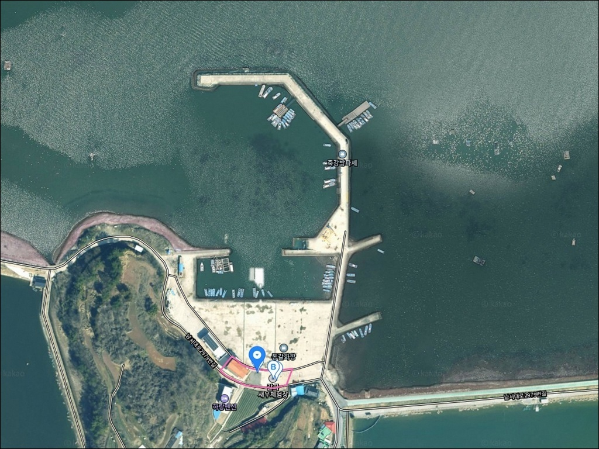
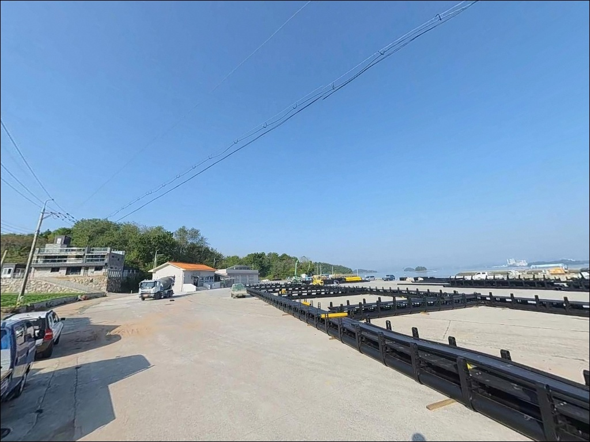
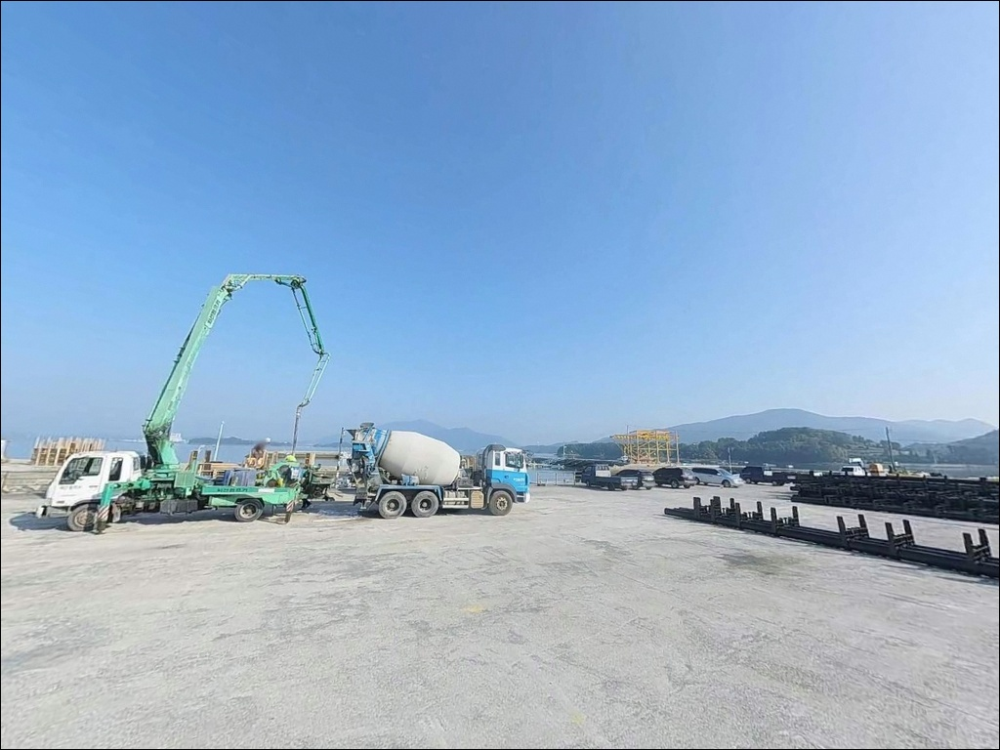
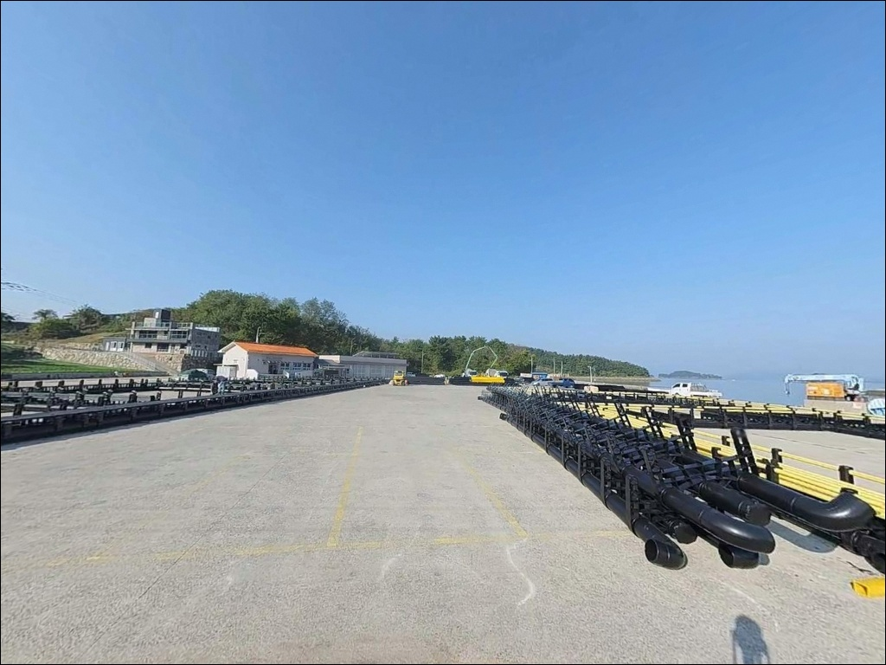
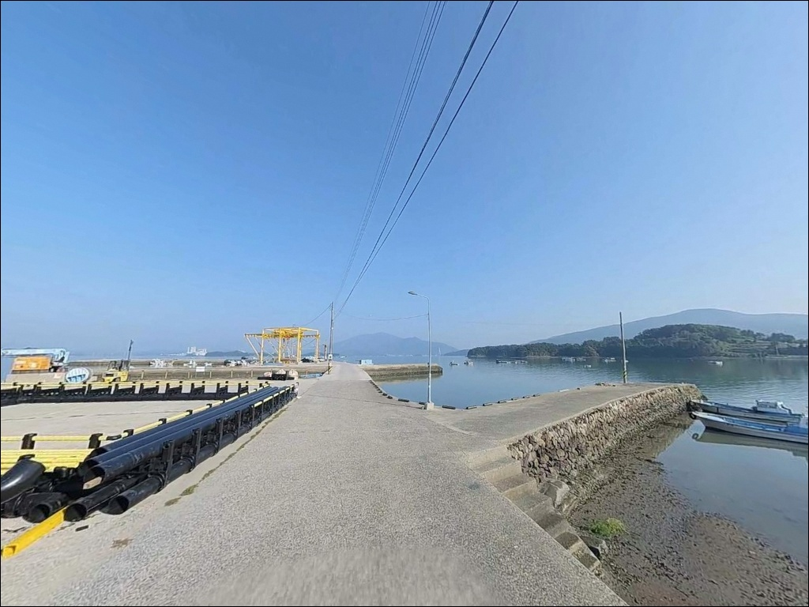
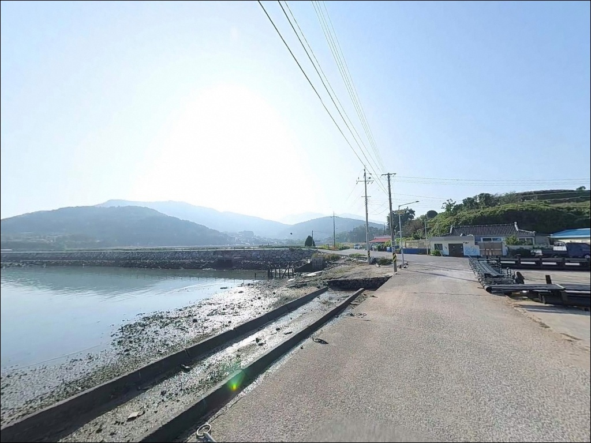
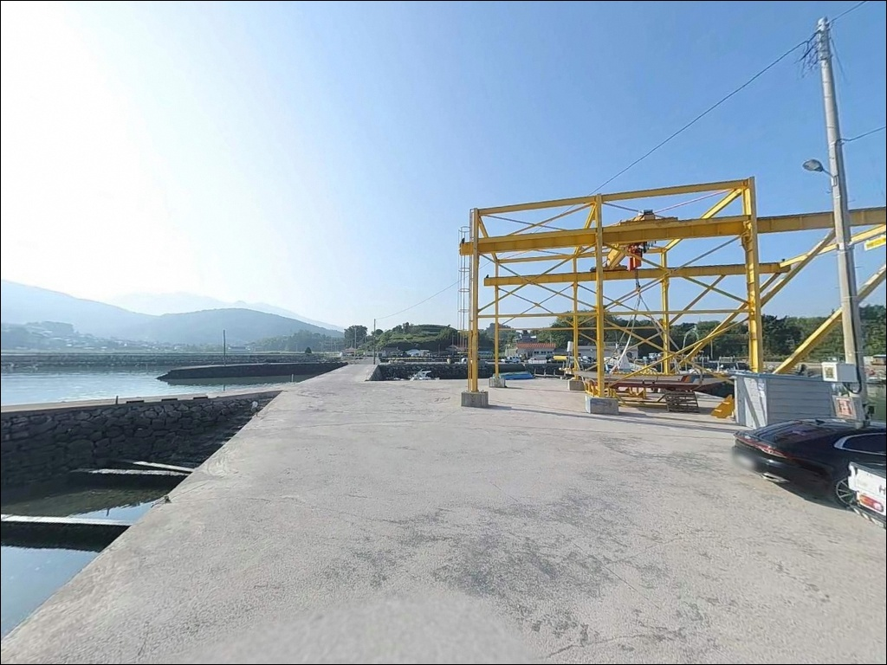
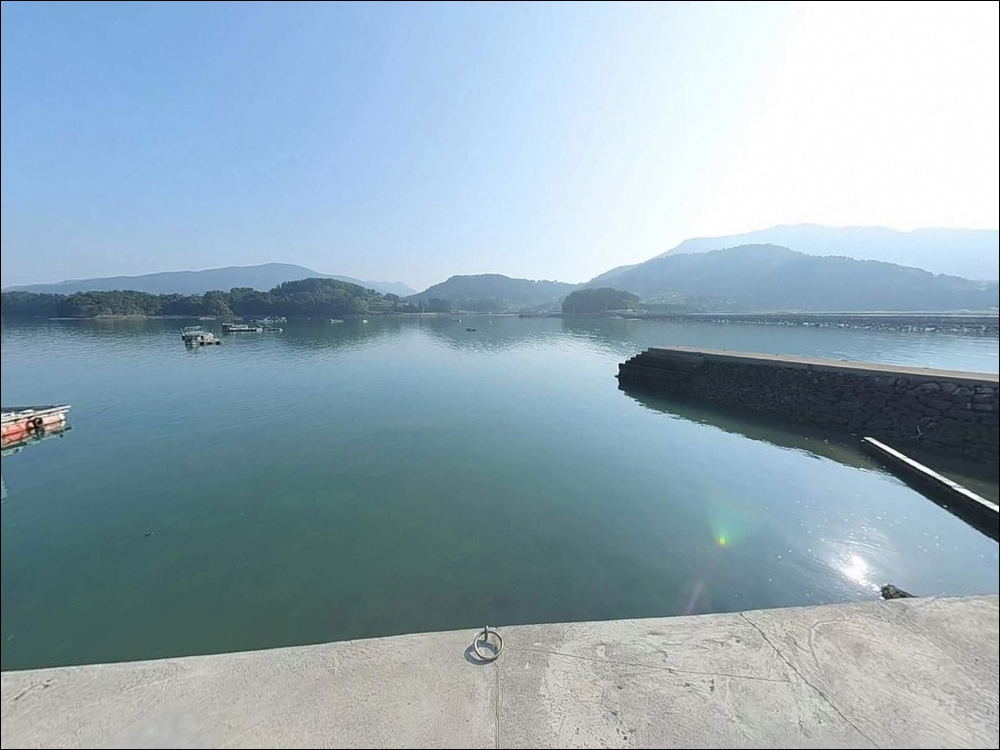
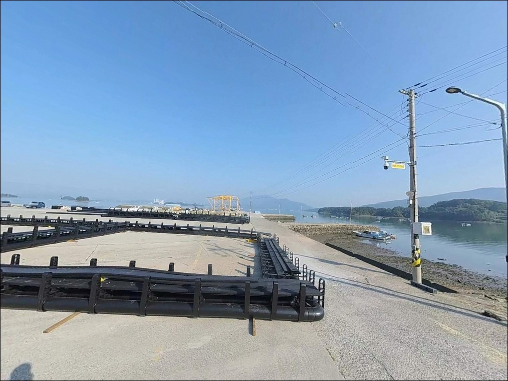

이 페이지에는 광고(제휴 링크 포함)가 있으며, 광고 링크를 통해 구매하면 운영자가 판매 수익 또는 수수료를 받을 수 있습니다. 포인트 사진: 카카오맵 스카이뷰·로드뷰. 이 페이지의 지도·사진 이미지는 카카오맵의 실제 서비스 이미지와 다를 수 있습니다.

동갈화항
경남 남해군 고현면 갈화리 1706-14
광양만 내만이라는 이유로 물때를 가리지 않고 진입하면,
방파제 끝단 외항 쪽에서 조류가 살아나는 타이밍을
통째로 놓치게 됩니다.
5물~10물 타이밍에 창조류·낙조류가 뚜렷하게 갈리는 구조로,
이 흐름이 살아야 원투 자리와 루어 반응이 달라집니다.
갈화방파제(죽강방파제)로도 불리는 이 항구는
1995년 지방어항으로 지정된 소형 항으로,
328m 방파제와 170m 호안으로 구성됩니다.
파도 직격 없는 내만형 환경이지만
조류 소통이 이뤄지는 해역에 속해
생활낚시와 에깅을 복수로 운용할 수 있는 구조입니다.
이 글은 동갈화항의 진입 동선, 차박 여건,
물때 판단 기준, 낚시 스타일별 공략 조건에 집중합니다.
조황 단정이나 특정 어종 보장은
이 글의 범위에 포함되지 않습니다.

남해대로에서 갈화마을 방향으로 진입하면
전 구간 2차선 포장도로로 연결됩니다.
비포장 구간이 없으며,
대형 캠핑카나 카라반도 진입에 무리 없는 수준입니다.
항내 부지가 비교적 넓게 조성되어 있어
회차도 자유로운 편입니다.
주차는 방파제 시작 지점과 선착장 내측
콘크리트 포장 공터를 활용하는 방식이 일반적입니다.
낚시 포인트 바로 뒤에 차를 댈 수 있어
짐 이동 동선이 짧은 것이 이 항의 장점입니다.
어선 이동 동선과 겹치지 않는 자리를 먼저 확인한 뒤
주차 위치를 정하는 것이 기본 순서입니다.
항 입구 방향 도로변 공터도 주차 후보로 활용할 수 있습니다.
방파제 끝단까지 도보로 접근하는 거리가
길지 않으므로 낚시 장비를 갖춘 경우에도
이동 부담이 크지 않습니다.

항내에 가로등이 갖춰져 있어
야간에도 밝은 편입니다.
조용한 어촌 마을 분위기이지만
민가가 인접해 있어
완전 고립형 차박지와는 다른 환경입니다.
과도한 소음이나 고성방가는 삼가는 것이
기본 매너입니다.
광양만 내만 구조 특성상 파도 영향이 거의 없어
수면이 안정적인 편입니다.
낚시를 마치고 차 안에서 하룻밤 머무는 용도로는
나쁘지 않은 환경이며,
주차 공간과 낚시 포인트가 가까워
철수 동선이 짧은 것도 차박 관점에서 유리합니다.
가로등이 밝은 구역 외에도
방파제 외항 쪽은 조도가 낮을 수 있으니
야간 낚시 시에는 헤드랜턴을 별도로 챙겨야 합니다.
외항 방파제 끝단은 추락 방지 난간이 없는 구간이 있으므로
야간 이동 시 각별한 주의가 필요합니다.

갈화항 어민회관 인근에 공중화장실이 있으며
관리 상태는 비교적 양호한 편입니다.
반경 3km 고현면 소재지 방향으로 이동하면
마트, 식당, 주유소를 이용할 수 있습니다.
출조 전 이 동선에서 필요한 물자를
사전에 준비하고 진입하는 것이 효율적입니다.
반경 10km권에는 노량항 낚시점 밀집 지역과
이순신순국공원이 있습니다.
노량항 인근은 낚시 소품 구입과
식사를 한 번에 해결하기 좋은 상권입니다.
동갈화항에서 도보 수 분 거리에
남해 해양낚시레저공원(갈화리 1578)이 위치합니다.
2026년 4월부터 무료 입장이 가능한 해상 낚시터로,
안전 난간과 발판이 정비된 시설 낚시터입니다.
방파제 낚시와 병행해 활용할 수 있으며,
운영 시간(10:00~18:00, 화요일 휴무)과
무료 운영 기간(4월~9월)을 사전에 확인하고 방문하는 것이 좋습니다.
가을철에는 갈화마을 왕새우가 유명해
인근 식당들이 활성화되는 시기입니다.
에깅 시즌과 왕새우 시즌이 겹치는 편이라
낚시 후 식사 동선으로 활용할 수 있습니다.

동갈화항 방문 전 가장 먼저 확인할 것은 물때입니다.
바다타임에서 고현면 기준 물때를 확인하고,
5물~10물 타이밍에 맞춰 출발 시각을 설계하는 것이 기본입니다.
사리 전후 조류가 세지는 시기에는
채비 컨트롤이 어려워지는 편이며,
조금 전후가 안정적인 낚시 여건을 만듭니다.
저질이 모래·펄 혼재 구조라
일반적인 방파제보다 밑걸림이 적은 편입니다.
원투낚시 채비 손실이 많지 않아
초보자도 부담 없이 운용할 수 있는 조건입니다.
다만 여분 채비는 2~3세트 준비해두는 것이
기본 준비 기준입니다.
광양만 항로가 인접한 해역이므로
선박 이동을 항상 인식하며 자리를 잡아야 합니다.
어촌계 어구(그물, 통발)를 훼손하거나
어민 작업 공간을 점유하는 행위는 금지입니다.
구명조끼와 헤드랜턴은 야간 출조의 기본 안전 장비입니다.

동갈화항은 328m 방파제와 170m 호안으로 구성된
내항 보호형 소형 항구입니다.
방파제 내항 쪽 수심은 얕지만
외항 방향과 방파제 끝단으로 갈수록
수심이 깊어지는 전형적인 방파제 지형 구조를 갖습니다.
끝단 콧부리 구간이 조류 흐름이 가장 강한 핵심 포인트입니다.
저질은 모래와 펄이 혼재된 구조로,
바닥이 비교적 평탄한 편입니다.
밑걸림이 심하지 않아
채비를 멀리 보내 천천히 끌어오는 방식에 적합합니다.
방파제 끝단 부근에는 잡초와 작은 암초 구간이
산발적으로 분포하는 것으로 파악됩니다.
광양만 내만 구조이지만
창조류와 낙조류가 뚜렷하게 나타나는 해역으로,
조류가 흐를 때 외항 방향 수로 구간에서
어류 활성도가 올라가는 패턴을 보입니다.
정조 타이밍에는 찌낚시나 민장대로
항내 잔잔한 수면을 공략하는 방식이 유효합니다.
최신 조황은 출조 전 꼭 검색해 보시기 바랍니다.

이 포인트에서 가장 잘 맞는 방식은 원투낚시입니다.
모래·펄 혼재 저질과 외항 방향 수심 구간은
도다리·붕장어·망둥어 공략에 알맞은 조건을 갖춥니다.
방파제 끝단 또는 외항 방향으로 길게 캐스팅한 뒤
조류 방향에 맞춰 채비를 천천히 끌어오는 방식이
이 포인트 저질 구조에 가장 잘 맞는 운용법입니다.
에깅과 루어낚시도 유효한 스타일입니다.
갑오징어·주꾸미 에깅은 가을 시즌에 내항과 외항 모두
반응을 보이는 경향이 있으며,
야간에는 소형 지그헤드 채비를 활용한
볼락 라이트게임도 노려볼 수 있습니다.
수심이 얕은 내항 쪽보다
외항 방향 수로 구간 집중 공략이 기본 전제입니다.
릴찌낚시와 민장대 낚시는
초보자가 부담 없이 접근할 수 있는 방식입니다.
항내 숭어·학꽁치·망상어 등 잡어 대상으로
방파제 석축 사이나 내항 벽면을 따라
가볍게 운용할 수 있습니다.
감성돔은 봄~가을 시즌에 기대해볼 수 있으며,
붕장어·노래미는 수온이 내려가는
겨울 시즌에 비중이 올라가는 편입니다.

동갈화항 여건이 여의치 않을 때
가장 먼저 이동할 대안은 차면방파제입니다.
남서쪽으로 약 10분 거리에 위치하며
외해 노출이 동갈화항보다 크고
감성돔 조황이 우수한 편으로 알려진 포인트입니다.
조류 흐름이 더 살아 있는 환경을 원할 때
첫 번째 이동 후보입니다.
약 6km 북쪽 노량항 방파제는
수심이 깊고 물살이 세서
대물 확률이 동갈화항보다 높은 포인트입니다.
주변에 낚시점이 밀집되어 있어
소품 구입이나 조황 정보 확인에도 유리합니다.
동갈화항을 기점으로 삼고 노량항을 병행하는 동선이
이 권역에서 가장 효율적인 이동 경로입니다.
1km 이내에는 갈화리 방파제가 있어
구조가 유사한 포인트로 포인트 분산이 가능합니다.
차박 대안으로는 이순신순국공원 주차장이
부대시설이 가장 충실한 선택지입니다.
설천면 노량공원도 조용한 체류 환경으로
활용할 수 있습니다.

원투낚시나 에깅을 즐기는 낚시인이라면
동갈화항의 방파제 구조는 잘 맞는 환경입니다.
외해 너울 없는 내만 여건에서
도다리·붕장어·갑오징어를 복수 방식으로 공략할 수 있고,
초보자와 베테랑이 함께 방문해도
각자 어울리는 방식이 있는 포인트입니다.
반면 물때를 확인하지 않고 찾아가거나
사리 전후 강한 조류 타이밍에 진입하면
채비 컨트롤이 어려워지는 상황을 맞닥뜨릴 수 있습니다.
물때 확인, 외항 방향 자리 선정, 어선 동선 배려,
이 세 가지를 갖추고 간다면
광양만 내만이 가진 조용하고 안정적인 낚시 여건을
제대로 활용할 수 있는 포인트입니다.
인근 해양낚시레저공원까지 한 동선으로 묶고,
가을 왕새우 시즌 식당 방문까지 더하면
낚시와 차박 모두 알차게 마무리하는 출조가 됩니다.